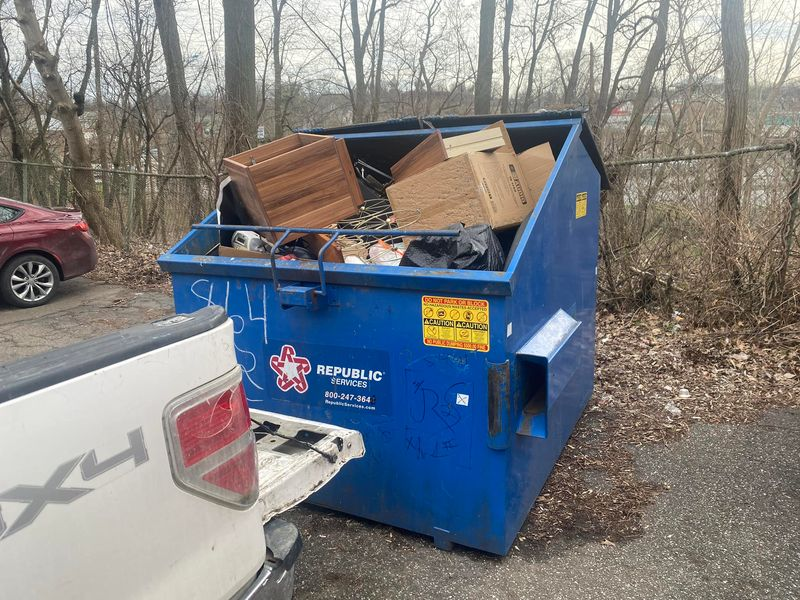

Mobile uploads
NO GOOD DEED GOES UNPUNISHED
I got my dumpster bill yesterday. What should have been an $85 bill turned into a $485 bill.
It’s not because of the community cleanups my homeless friends and I are doing. It’s because other people are using my dumpster and over filling it.
If the lid doesn’t close completely I am charged an additional $85 overage fee. I was charged this overage every week this past month.
Seeing this bill flooded my mind and spirit with many bad feelings.
My initial feeling was that I needed to get rid of this dumpster and stop all cleanups.
My family pays for this dumpster because our charity is not yet financially stable enough to afford the $85 monthly bill, much less a $400 monthly overage.
I am very conscious of balancing my homeless work with my family life. My journey of giving is mine and mine alone. It is not my son’s or my wife’s.
So I was mostly upset that I had caused this financial burden on them.
But I was also angry.
I was angry at all the takers. The people who, selfishly, take what is not theirs and then take more than their fair share.
I truly believe in this idea that No Good Deed Goes Unpunished.
I believe there are forces in the universe. Light forces and Dark forces. I believe these forces are focused on humanity. Light forces want to see humanity succeed and Dark forces want to see humanity fail. (I am careful here not to say Good forces and Bad or Evil forces. I would say that both forces believe they are good, depending on the perspective you take.)
I believe that the Dark forces do not like changing the natural order of things. The weak and old should be disdained and discarded. This breeds resentment and war. And this then fans the flames of humanity’s destruction.
Forgiveness, acceptance, understanding, and compassion are the Light forces. They are the path of humanity’s salvation.
So I believe the Dark forces will punish you for helping those in need whenever they possibly can. They will also do everything in their power to show you the logic that being a helper and a giver doesn’t pay.
I have countless stories of this happening both to myself and to other people who have given. I probably could write a book just on these stories alone. But let me give you one story now…
A young husband and wife became very involved in our homeless community. They became attached to a young homeless couple who were living in the woods. The homeless woman was pregnant.
The homeless woman was very interested in trying to keep her baby. And she had an idea on how to do it: she had family in another state, 12 hours away. They said she and her boyfriend could move in with them, if they could just find a way to get to their house.
So the young supporters drove them the 12 hours to her family. It was a great act of kindness and giving. This homeless couple would be united with their family, they’d be able to keep their baby, and they would no longer be homeless. How wonderful is all that!?
Well, the relationship between the homeless couple and their family quickly eroded. They wanted to come back to Akron. So they contacted an adoption agency who would provide them the bus ticket back to Akron and they could put the baby up for adoption.
Within 2 weeks they were back in Akron, in the woods. They cut ties with the adoption agency. They had some sort of fantasy that they’d somehow get to keep the baby.
She gave birth, had no way of caring for the baby, and left it at the hospital. They live in the woods to this day.
Now, I’m not saying Dark forces had anything to do with that. These homeless people did all the work here. But these Dark forces certainly will step in and point out the seemingly obvious moral of the story: helping does not pay.
Those young supporters never came back after this nightmare.
So many people tell me that they want to help people who want help. I don’t say it, but I always think it: “You aren’t going to find anyone like that around me. You might as well go home now and save yourself the heartache.”
People aren’t stuffing my dumpster with trash because they are evil or bad. They are stuffing my dumpster with trash because they want to do the right thing and properly throw away their trash instead of dumping it in the woods. We live in a world where people can’t afford trash service.
We live in a world where people can’t afford water. So they will steal water.
We live in a world where people can’t afford toilets. So they will sneak into toilets whenever possible.
We live in a world where people can’t afford housing. So they will make some shelter on someone else’s land.
And instead of helping people with these life necessities, we make laws that criminalize these behaviors.
The Dark forces have the ear of our entire government and most of society. I’m telling you this without a doubt: this is how humanity dies. We will tear each other from limb to limb until no one is left. Simply moving to another planet will not solve this. We’ll take our hate and cruelty wherever we go.
This is probably why the Dark forces are trying to oversee our destruction. We look hopeless. Maybe they are right.
But know this: goodness resides in the heart of every human. We are each a glowing orb of optimism and hope that represents the goodness of our creator. We CAN overcome our pessimism and fear. It’s a journey of faith, hope and love. It’s the most terrifying way to live. But it’s the only path for our survival. It’s the only way we stay alive.